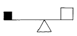
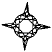
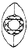
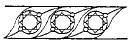
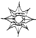

보석가공기능사 (2003-07-20 기출문제)
1과목: 보석재료
1. 굴절률이 높은 보석에서 볼 수 있는 광택으로 다이아몬드에서 볼 수 있는 표면 광택은?
- 금강광택
- 금속광택
- 견사광택
- 유리광택
(정답률: 알수없음)

2. 다음 중 광물의 물리적 특성에 해당되는 것은?
- 염색반응
- 동질이상
- 고용체
- 경도
(정답률: 알수없음)
3. 월장석(moon stone)에서 나타나는 보석의 광학적 특수효과는?
- 지라솔효과
- 아둘라레센스
- 라브라도레센스
- 어벤트레센스
(정답률: 알수없음)
4. 베루누이법으로 제조하는 합성보석 중 루비의 착색물질은?
- Cr
- Ni
- Co
- V
(정답률: 알수없음)
5. 견사광택을 나타내는 보석광물은?
- 수정
- 석류석
- 페리도트
- 호안석
(정답률: 알수없음)
6. 버마의 모곡지방에서 산출되는 대표적인 보석은?
- 루비
- 옥
- 지르콘
- 황수정
(정답률: 알수없음)
7. 대개의 유색보석은 고유의 색상을 나타내는 것으로 분류하게 되는데, 자색(自色)과 타색(他色)으로 구분할 경우 자색을 나타내는 보석은?
- 루비
- 자수정
- 페리도트
- 에메랄드
(정답률: 알수없음)
8. 호박(amber)에 대한 설명 중 틀린 것은?
- 주성분은 탄소, 수소, 산소이다.
- 벽개가 잘 발달한다.
- 굴절률은 1.54 이다.
- 비중은 1.⑤-1.096 정도이다.
(정답률: 알수없음)
9. 염색보석 중 유기염료를 사용하여 인공 염색한 것은?
- 영하의 기온에서 퇴색한다.
- 수분에 장시간 침적시키면 보라색으로 변색된다.
- 햇볕에 퇴색하기 쉽다.
- 열에는 퇴색하지 않는다.
(정답률: 알수없음)
10. 보석을 연마할 때 넓은 부분을 빠르게 연마하기 위해서 주로 사용되는 연마제는?
- 실리콘카바이드
- 알루미늄산화물
- 탄소
- 산화세륨
(정답률: 알수없음)
11. 수정의 폴리싱 재료로 적합한 것은?
- 산화크롬
- 린데에이
- 세륨
- 다이아몬드 파우더
(정답률: 알수없음)
12. 아이보리(상아)를 확대검사하면 나타나는 대표적인 모양은?
- 색대(color zoning)
- 엔진턴(engine-turned)
- 릴리패드(lily-pad)
- 말꼬리상(horse-tail)
(정답률: 알수없음)
13. 광택연마판의 용도로서 세라믹에 해당하는 설명이 아닌 것은?
- 코런덤(corundum)이나 크리소베릴의 광택작업에 효과가 크다.
- 매우 반듯한 평면을 만들어 낸다.
- 광택제로는 1/4-1/2μ 크기 입자의 다이아몬드 분말을 사용한다.
- 광택판의 회전속도를 매우 빠르게 한 상태에서 광을 내는 것이 일반적이다.
(정답률: 알수없음)
14. 다음 보석재 중 합성석이 아닌 것은?
- 합성 사파이어
- 합성 오팔
- 야그(YAG)
- 합성 다이아몬드
(정답률: 알수없음)
15. 금속 바탕에 유리분말을 용착한 것은?
- 포일백
- 더블릿
- 에나멜(칠보)
- 트리플릿
(정답률: 알수없음)
16. 원석을 연마하기전 돕스틱에 접착할 때 쓰이는 접착제의 종류가 바르게 나열된 것은?
- 모델링, 천연고무
- 셀락, 모델링
- 천연고무, 진토
- 셀락, 린데에이
(정답률: 알수없음)
17. 석류석(garnet)의 변종인 파이로프(pyrope)의 화학식은?
- Ca3Fe2(SiO4)3
- Fe3Al2(SiO4)3
- Ca3Al2(SiO4)3
- Mg3Al2(SiO4)3
(정답률: 알수없음)
18. 진주, 산호, 조개껍질, 말라카이트 등이 염산에 쉽게 침해 당하는 이유는?
- 유기물질이므로
- 규산염이므로
- 인산염이므로
- 탄산염이므로
(정답률: 알수없음)
19. 경옥과 연옥은 어느 결정계에 속하는가?
- 정방정계
- 사방정계
- 단사정계
- 육방정계
(정답률: 알수없음)
20. 톱날의 크기에 따라 절단이 가능한 원석의 두께가 잘못 짝지어진 것은?
- 9인치 : 5∼6㎝
- 10인치 : 6∼6.5㎝
- 12인치 : 8∼8.5㎝
- 16인치 : 14∼14.5㎝
(정답률: 알수없음)
2과목: 보석가공
21. 다음 중 디자인 용어의 뜻과 다른 것은?
- 공예(工藝)
- 계획(計劃)
- 도안(圖案)
- 의장(意匠)
(정답률: 알수없음)
22. 시각 현상의 3요소가 아닌 것은?
- 눈
- 대상
- 빛
- 색
(정답률: 알수없음)
23. 보석을 소절단기로 절단 작업할 때 평행을 유지시켜 주는 기능을 하는 것은?
- 죔쇠 받침면
- 선반
- 조정대
- 벨트덮개
(정답률: 알수없음)
24. 표준 브릴리언트 크라운 면의 광택작업 순서가 바르게 나열된 것은?
- 테이블, 메인, 스타, 코너
- 스타, 메인, 코너, 테이블
- 테이블, 스타, 메인, 코너
- 메인, 스타, 코너, 테이블
(정답률: 알수없음)
25. 보석가공 설명 중 틀린 것은?
- 최대한 크게 원석을 살린다.
- 얼과 흠을 피해서 연마한다.
- 경도가 약할수록 불에 달구어 수분을 없앤다.
- 보석 뒷면의 모서리를 둥글게 굴린다.
(정답률: 알수없음)
26. 다음 그림은 무엇을 나타낸 것인가?

- 대칭
- 조화
- 균형
- 균제
(정답률: 알수없음)
27. 시간적인 차를 두고 두가지 색채를 차례로 볼수 있으며 부수적으로 잔상의 현상이 일어나는 대비는?
- 색상대비
- 명도대비
- 채도대비
- 계시대비
(정답률: 알수없음)
28. 다음 중 색채를 크게 두가지로 분류한 것은?
- 명도와 채도
- 색상과 조화
- 한색과 중성색
- 유채색과 무채색
(정답률: 알수없음)
29. 다음 중 측정공구가 아닌 것은?
- 지환봉
- 전단기
- 곧은자
- 모 게이지
(정답률: 알수없음)
30. 옷감 무늬를 침착하고 은은한 배색으로 하려면?
- 저채도의 유사색의 배색
- 고채도의 반대색의 배색
- 명도가 같은 보색의 배색
- 명도, 채도차가 큰 유사색의 배색
(정답률: 알수없음)
31. 다음 중 입면도와 관계가 없는 것은?
- 정면도
- 평면도
- 측면도
- 배면도
(정답률: 알수없음)
32. 물체가 상하, 좌우 대칭일 때 주로 사용하는 단면은?
- 반단면
- 계단단면
- 전단면
- 부분단면
(정답률: 알수없음)
33. 색상이 아주 짙은 보석에 알맞는 캐보션 형태는?
- 평캐보션
- 복캐보션
- 오목캐보션
- 단캐보션
(정답률: 알수없음)
34. 표준 브릴리안트형에 대한 설명 중 잘못된 것은?
- 58면으로 되어있다.
- 투명한 보석의 색을 가장 잘 살려주는 연마형이다.
- 크라운면과 퍼빌리언 면으로 크게 나눌수 있다.
- 브릴리안트형은 17세기 중엽에 개발되었다.
(정답률: 알수없음)
35. 오벌형의 분류에 대한 설명 중 잘못된 것은?
- 외형에 따른 분류: 10 × 8, 8 × 6, 14 × 10, 10 × 6
- 메인면수에 따른 분류: 8메인, 10메인, 16메인, 18메인
- 연마형에 따른 분류(크라운): 브릴리언트, 스텝, 조발, 바둑판형
- 연마형에 따른 분류(퍼빌리언): 브릴리언트, 레이지, 스텝형
(정답률: 알수없음)
36. 조각 난물림에 대한 설명 중 잘못된 것은?
- 평정으로 4발 난물림

- 보트식 난물림

- 나뭇잎 멜레난물림

- 꽃잎 난물림

(정답률: 알수없음)
37. 수공구 재해를 방지하기 위한 조치 사항 중 잘못된 것은?
- 공구의 성능을 충분히 알고 있을 것
- 정비상태의 이상 유무를 확인할 것
- 공구는 올바른 방법으로 사용할 것
- 공구를 사용 후 사용장소에 그대로 정돈할 것
(정답률: 알수없음)
38. 대절단기의 각 부분의 기능 중 톱날이 좌우로 유동하는 것을 막아주고, 톱날을 견고하게 지지하는 역할을 하는 것은?
- 톱날 죔쇠
- 톱날 냉각 덮개
- 톱날 상자
- 축 베어링
(정답률: 알수없음)
39. 버니어캘리퍼스를 사용하여 측정이 가능한 것으로 짝지워진 것은?
- 제품의 길이, 폭, 직경
- 제품의 길이, 폭, 중량
- 직경, 폭, 중량
- 제품의 길이, 폭, 연마각
(정답률: 알수없음)
40. 정기점검에 관한 설명 중 올바른 것은?
- 작업전과 작업 중에 실시하는 점검이다.
- 매주 1회 또는 매월 1회 주기적으로 하는 점검이다.
- 경영책임자 주관에 의해 실시되는 점검이다.
- 기계를 새로 구입하였을 때 실시하는 점검이다.
(정답률: 알수없음)
3과목: 보석감정
41. 텀블링 연마의 특징이 아닌 것은?
- 실용성이 없는 조각(chip)도 실용성이 있는 돌로 만들 수 있다.
- 보석의 종류, 형태에 관계없이 연마가 가능하다.
- 텀블러 연마방법에는 건식과 습식이 있다.
- 가동시간은 3분을 넘겨서는 안된다.
(정답률: 알수없음)
42. 보석의 세척방법 중 끓이면 안 되는 보석은?
- 루비
- 제트
- 자수정
- 제이드
(정답률: 알수없음)
43. 안전점검의 올바른 목적은?
- 작업의 능률을 증가시키기 위해서이다.
- 작업장의 불안정한 상태와 행동을 발견하고 이를 개선하는데 있다.
- 작업자 개개인의 작업능력을 올바로 파악하기 위함이다.
- 제품의 파손 및 훼손을 미연에 방지하기 위해서이다.
(정답률: 알수없음)
44. 원석의 대절단 작업시 열을 식혀 톱날의 손상과 원석의 파손을 방지하고 절단작업을 쉽게하기 위하여 사용하는 냉각제로 가장 좋은 것은?
- 등유
- 모빌유+등유
- 녹색오일
- 경유+모빌유
(정답률: 알수없음)
45. 다이아몬드 원석이 산출되는 주된 형태는?
- 4면체
- 6면체
- 8면체
- 12면체
(정답률: 알수없음)
46. 만약 어떤 돌이 비중이 높은 액체속에서 빨리 가라앉으면 이 돌의 비중은?
- 액체의 비중보다 훨씬 낮다.
- 액체의 비중보다 조금 낮다.
- 액체의 비중보다 조금 높다.
- 액체의 비중보다 훨씬 높다.
(정답률: 알수없음)
47. 보석의 특별한 성질에 관한 다음 설명 중 올바른 것은?
- 토파즈는 완전한 벽개의 성질이 있으므로 벽개방향으로 연마하기 쉽다.
- 커런덤은 인성이 가장 강한 보석이다.
- 에메랄드는 경도가 7½ 정도이므로 외부의 충격에 강하다.
- 호박을 옷에 마찰시키면 마찰전기가 일어난다.
(정답률: 알수없음)
48. 다이아몬드의 클래러티(clarity:투명도) 특징은 인쿠루젼(inclusion)과 블레미쉬(blemish)로 크게 두가지로 나눈다. 다음 중 인쿠루젼으로 분류되는 것은?
- 스크레치(scratch)
- 폴리쉬라인(polish line)
- 어브레이션(abrasion)
- 노트(knot)
(정답률: 알수없음)
49. 표준 라운드 브릴리언트 컷 다이아몬드의 중량 추정 공식이 올바른 것은?
- 평균직경2 x 깊이 x 0.0061 x 중량수정치
- 최대직경2 x 깊이 x 0.0061 x 중량수정치
- 길이 x 폭 x 깊이 x 0.00061 x 중량수정치
- 최소직경2 x 깊이 x 0.0061 x 중량수정치
(정답률: 알수없음)
50. 만약 양식진주 목걸이가 단순히 닦는 것 이상을 필요로 한다면 다음 중 가장 적합한 세척제는?
- 식초와 암모니아
- 미지근한 연성비눗물
- 초음파와 압축스팀
- 분말과 칫솔
(정답률: 알수없음)
51. 1메트릭 캐럿(metric carat)은?
- 0.2g
- 0.02g
- 2g
- 200포인트
(정답률: 알수없음)
52. 보석의 종에 따라서 형광반응이 다른 이유와 관계 없는 것은?
- 내포물
- 화학적 불순물
- 칼라조닝(색대)
- 굴절율 차이
(정답률: 알수없음)
53. 아스테리즘(asterism)이 있는 적색 커런덤의 명칭은?
- 스타 커런덤(star corundum)
- 스타 루비(star ruby)
- 스타 사파이어(star sapphire)
- 오리엔탈 커런덤(oriental corundum)
(정답률: 알수없음)
54. 다음 보석 중 임계각이 가장 작고 분산도가 가장 높은 것은?
- G,G,G
- 합성 루틸
- 티탄산스트론 티움
- cubic zirconia
(정답률: 알수없음)
55. 다음 중 굴절계를 이용하여 얻을 수 있는 정보는?
- 유기질보석과 무기질보석의 구별
- 벽개성과 열개성의 구별
- 일축성과 이축성의 구별
- 대칭축과 결정축의 구별
(정답률: 알수없음)
56. 다음 자수정 감별에 관한 설명 중 틀린 것은?
- 현미경으로 빵가루내포물이 보이면 합성 자수정이다.
- 현미경으로 호피상내포물이 보이면 천연 자수정이다.
- 내포물이 없는 경우 물이나 비중액에 침적시킨 상태에서 직선적인 색대와 색의 분포가 불균일한 상태가 나타나면 천연 자수정이다.
- 내포물이 없는 경우 물이나 비중액에 침적시킨 상태에서 이등변 삼각형과 같은 컬러존이 보이고 색이 전반적으로 균일하게 보이면 천연 자수정이다.
(정답률: 알수없음)
57. 일반적으로 합성 루비는 일부 천연 루비에 비해 강한 형광반응을 나타내는데 그 이유를 올바르게 설명한 것은?
- 합성 루비에는 코발트 성분이 들어 있기 때문에 강한 형광을 나타낸다.
- 일부 천연 루비에는 철 성분이 들어있는데 이 철성분 이 형광을 약화시키기 때문이다.
- 합성 루비에는 이산화철 성분이 들어 있어서 형광을 강하게 한다.
- 합성 플럭스 루비에는 백금 성분이 들어 있는데 이 백금 성분이 형광을 강하게 만든다.
(정답률: 알수없음)
58. 비중액안에 작은 동 조각을 넣어두는 이유는?
- 비중액의 암색화를 방지하기 위해
- 비중액안의 불순물을 흡착하기 위해
- 비중액의 농도를 계속 일정하게 유지하기 위해
- 비중액의 온도를 일정하게 유지하기 위해
(정답률: 알수없음)
59. 굴절계의 용도가 아닌 것은?
- SR 또는 DR 결정
- 다색성 검사
- 복굴절률 측정
- 광학사인 결정
(정답률: 알수없음)
60. 편광검사에 대한 설명 중 틀린 것은?
- 불즈아이(Bull's Eye)현상은 오직 쿼츠에서만 나타난다.
- 편광기의 용도로는 광학특징 결정, 광축결정 등이 있다.
- 편광기에서 검사할 수 있는 돌의 투명도는 TP에서 O까지이다.
- OTL돌, 적색돌, 앰버, 유리는 불확실한 반응을 보일 수 있다.
(정답률: 알수없음)